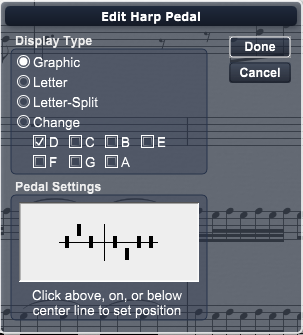

Double click the harp pedal symbol to open the Harp Pedal Settings dialog box. This dialog box provides an easy environment to manipulate the settings. Changes made to the Harp Pedal Settings dialog box affect only the symbol being edited, not subsequent insertions of harp pedal markings. Individual harp pedal markings can be copied and pasted. Press the ctrl key while dragging to drag a copy of the pedal symbol.

The bottom of the dialog box contains the pedal settings:
To make changes, click above, on, or below the center line for each pedal. The string pitches are, from left to right: D, C, B, E, F, G, A. The vertical line divides the first three pitches, controlled by the left foot, from the last four, controlled by the right foot.